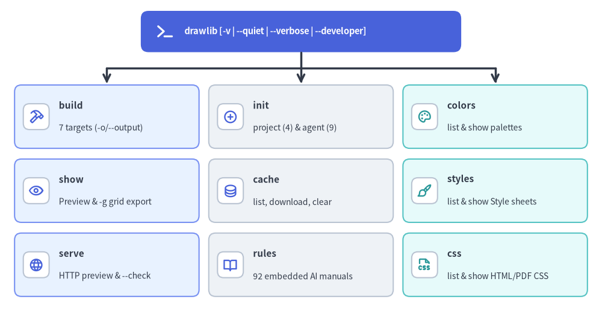
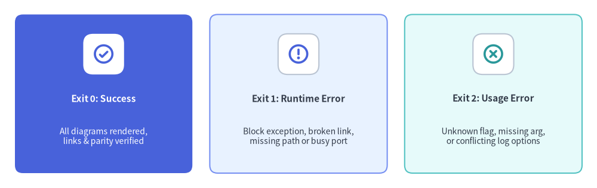

Unified CLI Architecture (drawlib._cli)
Drawlib's command-line interface (src/drawlib/_cli/) is the primary operational contract shared by human engineers, CI/CD pipelines, and autonomous AI coding agents. Built on Typer, _cli/_drawlib.py organizes project scaffolding, multi-target compilation, grid-assisted visual inspection, local previewing, offline cache management, embedded agent manuals, and design-token inspection under nine top-level command groups.

Source Code
from drawlib.canvas import save, setup
from drawlib.icons import phosphor
from drawlib.lines import line
from drawlib.shapes import rectangle
from drawlib.smartarts import CardList
from drawlib.styles import Colors, Styles
from drawlib.text import text
setup(width=124, height=64)
# Root CLI Entrypoint Banner
rectangle((62.0, 57.5), width=66.0, height=8.5, style=Styles.PrimaryFlat.patch(shape_r=1.6))
phosphor.terminal((34.0, 57.5), width=4.0, style=Styles.WhiteBold)
text(
(38.0, 57.5),
"drawlib [-v | --quiet | --verbose | --developer]",
style=Styles.WhiteBold.patch(halign="left", text_size=10.5),
)
# Orthogonal 3-column dispatch bus
line((62.0, 53.25), (62.0, 50.0), style=Styles.DarkBold)
line((22.0, 50.0), (102.0, 50.0), style=Styles.DarkBold)
for col_x in (22.0, 62.0, 102.0):
line((col_x, 50.0), (col_x, 46.8), arrow_head="->", style=Styles.DarkBold)
soft_white_badge = Styles.Neutral.patch(shape_fill_color=Colors.White, shape_r=1.2)
# Column 1: Authoring, Compilation & Preview
col1 = CardList(
style=Styles.PrimaryNeutral.patch(shape_r=1.4),
text_style=Styles.DarkBold.patch(text_size=11.0),
description_style=Styles.Dark.patch(text_size=10.0),
badge_shape="rounded_rect",
badge_style=soft_white_badge,
icon_style=Styles.PrimaryBold,
direction="vertical",
spacing=2.2,
)
col1.add("build", "7 targets (-o/--output)", icon=phosphor.hammer)
col1.add("show", "Preview & -g grid export", icon=phosphor.eye)
col1.add("serve", "HTTP preview & --check", icon=phosphor.globe)
col1.draw(xy=(3.0, 3.0), width=38.0, height=43.5)
# Column 2: Scaffolding, Cache & Agent Manuals
col2 = CardList(
style=Styles.Neutral.patch(shape_r=1.4),
text_style=Styles.DarkBold.patch(text_size=11.0),
description_style=Styles.Dark.patch(text_size=10.0),
badge_shape="rounded_rect",
badge_style=soft_white_badge,
icon_style=Styles.PrimaryBold,
direction="vertical",
spacing=2.2,
)
col2.add("init", "project (4) & agent (9)", icon=phosphor.plus_circle)
col2.add("cache", "list, download, clear", icon=phosphor.database)
col2.add("rules", "92 embedded AI manuals", icon=phosphor.book_open)
col2.draw(xy=(43.0, 3.0), width=38.0, height=43.5)
# Column 3: Design System & CSS Inspection
col3 = CardList(
style=Styles.SecondaryNeutral.patch(shape_r=1.4),
text_style=Styles.DarkBold.patch(text_size=11.0),
description_style=Styles.Dark.patch(text_size=10.0),
badge_shape="rounded_rect",
badge_style=soft_white_badge,
icon_style=Styles.SecondaryBold,
direction="vertical",
spacing=2.2,
)
col3.add("colors", "list & show palettes", icon=phosphor.palette)
col3.add("styles", "list & show Style sheets", icon=phosphor.paint_brush)
col3.add("css", "list & show HTML/PDF CSS", icon=phosphor.file_css)
col3.draw(xy=(83.0, 3.0), width=38.0, height=43.5)
save()
1. Root Application Design & Startup Architecture
_cli/_drawlib.py configures the root typer.Typer application with deliberate runtime choices tailored for deterministic CLI and AI-agent execution:
- Deterministic Help Surface (
add_completion=False): Disables Typer's--install-completion/--show-completionflags so--helpoutput stays concise and uniform across operating systems and agent shells. - Root
main_callback()& Logging Modes:- Handles
-v/--versionvia an eager callback (Exit(0)). - Enforces mutual exclusion across
--quiet,--verbose/--debug, and--developer(raising atyper.BadParameterusage error on conflicting flags) before configuringdrawlib_settings.set_logging_mode(...). - Calls
_ensure_overview_rules_cached()on normal command invocations so the foundationaloverviewagent rule manual is pre-warmed insidedrawlib/_cached_assets/rules/.
- Handles
- Lazy Domain Imports & String Path Validation:
- Heavy rendering and compilation modules (
matplotlib,doc_builder,_slide,_http_server) are imported lazily inside individual command handlers, keepingdrawlib --helpanddrawlib rulesresponsive. - Input/output paths are declared as
strarguments rather than ClickPath(exists=True)validators. Domain builders (require_directory(),_resolve_serving_directory()) perform rich contextual validation (such as detecting when a user passes<project>/en/instead of the<project>/root containingdrawlib.toml) and exit cleanly with Exit Code1.
- Heavy rendering and compilation modules (
- Explicit Flag Conventions: Single-purpose switches use explicit flags (
--no-cache,--check,--skip-check,--no-browser,--timestamp), while dual boolean toggles (--page-break/--no-page-breakand--generate-index/--no-generate-index) are reserved for multi-chapterpdfanddocxpagination defaults.
2. Complete Reference of the Nine Command Groups
| Command Group | Subcommands & Signature | Key Options & Architectural Behavior |
|---|---|---|
build |
image, markdown, html, pdf, docx, slide, pptx |
Unified -o/--output target option (never --output-dir), -s/--styles, -u/--utils, --no-cache; --dpi on docx (200) and pptx (240); --anim-frame first|last on pptx. |
show |
drawlib show <file> [block] |
Renders a .py script or a single embedded block from .md/.html interactively or to -o/--output with -g/--grid (10/5-unit review grid). Automatically falls back to rules show <topic> when <file> matches a known rule topic! |
serve |
drawlib serve [dir] |
Starts _CustomHTTPServer on -p/--port 8000 (--no-browser), running scan_broken_links() preflight unless --skip-check, or exits headlessly via --check. |
init |
init project <doc|site|slide|images|list>init agent [target|all|list] |
Scaffolds multi-locale drawlib.toml projects (-l/--lang, -s/--style), and provisions Drawlib skill/rule files across 9 AI coding agents (antigravity, claude, cursor, copilot, windsurf, cline, roo, codex, gemini) via _templates/_agent.py (--detect, --mode auto|always, --global). |
rules |
list, show <topic>, build [topic|all], clear |
Serves 92 embedded Markdown manuals (13 workflow/project guides + 79 lib-* API specs); supports --rebuild and --raw (uncompiled drawlib fences). |
cache |
list, download, clear |
Inspects 83 release asset packages, pre-warms --all, --fonts, --icons, --maps, or --browser (chromium-headless-shell), and clears .drawlib/cache.db (--images or --all). |
colors |
list, show <preset> |
Renders visual color swatch sheets (default, default1–6, google, monochrome) sorted by --sort hsv|name|raw or exported via -o/--output. |
styles |
list, show <preset> [page] |
Renders paginated visual catalog sheets (1–7 or --all) of Styles tokens (DefaultStyles, GoogleStyles, MonochromeStyles). |
css |
list [html|pdf], show [html|pdf] <preset> |
Lists the 9 CSS theme presets (html) or pdf print target, and prints or writes (-o) the synthesized stylesheet localized for -l/--lang. |
3. Exit Code Contracts for CI/CD & Autonomous Agents
Automated pipelines and AI coding loops rely on strict POSIX exit codes to distinguish clean builds, domain/content defects, and malformed CLI invocations:

Source Code
from drawlib.canvas import save, setup
from drawlib.icons import phosphor
from drawlib.smartarts import CardList
from drawlib.styles import Colors, Styles
setup(width=120, height=38)
soft_white_badge = Styles.Neutral.patch(shape_fill_color=Colors.White, shape_r=1.3)
cards = CardList(
style=Styles.Neutral.patch(shape_r=1.6),
text_style=Styles.DarkBold.patch(text_size=11.0),
description_style=Styles.Dark.patch(text_size=10.0),
badge_shape="rounded_rect",
badge_style=soft_white_badge,
icon_style=Styles.PrimaryBold,
direction="horizontal",
spacing=3.5,
)
cards.add(
"Exit 0: Success",
"All diagrams rendered,\nlinks & parity verified",
icon=phosphor.check_circle,
style=Styles.PrimaryFlat.patch(shape_r=1.6),
text_style=Styles.WhiteBold.patch(text_size=11.0),
description_style=Styles.White.patch(text_size=10.0),
badge_style=Styles.White.patch(shape_line_width=0, shape_r=1.3),
icon_style=Styles.PrimaryBold,
)
cards.add(
"Exit 1: Runtime Error",
"Block exception, broken link,\nmissing path or busy port",
icon=phosphor.warning_circle,
style=Styles.PrimaryNeutral.patch(shape_r=1.6),
badge_style=soft_white_badge,
icon_style=Styles.PrimaryBold,
)
cards.add(
"Exit 2: Usage Error",
"Unknown flag, missing arg,\nor conflicting log options",
icon=phosphor.x_circle,
style=Styles.SecondaryNeutral.patch(shape_r=1.6),
badge_style=soft_white_badge,
icon_style=Styles.SecondaryBold,
)
cards.draw(xy=(3.0, 3.0), width=114.0, height=32.0)
save()
- Exit Code
0(Clean Completion): Compilation succeeded,drawlib serve --checkfound zero broken or forbidden links, or eager metadata (--version,--help) completed normally. - Exit Code
1(Runtime / Domain Failure): Structured domain handlers (_handle_build_error,serve_docs,cache) caught an execution error inside adrawlibblock, a missing directory ordrawlib.toml, ani18nparity mismatch, broken links under--check, an occupied HTTP port, or an asset SHA-256 verification failure. (Passing--developerre-raises full Python tracebacks for debugging.) - Exit Code
2(CLI Usage / Flag Conflict): Typer/Click rejected unknown options, missing required positional arguments, invalidLiteralchoices (such as-f gif), or mutually exclusive global logging flags (--quietcombined with--verbose).
Next, examine how local HTTP previewing and Drawlib's three-tier local cache storage operate in Preview Server & Assets.